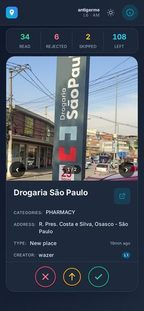
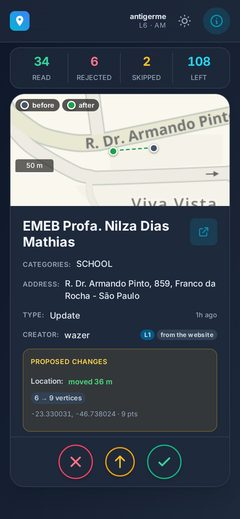
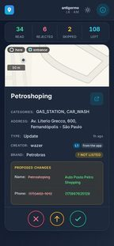

Entrando pelo WME…
A extensão está usando o seu login do Waze Map Editor.
Bem-vindo!
Triagem rápida dos pedidos de places que chegam no Waze: você vê um por vez e decide com um toque.
Quem pode entrar: editor nível 3+ que seja Area Manager, ou staff do Waze.



Os cookies são trocados por um token de sessão criptografado no servidor (validade de 21 dias) e nunca trafegam novamente após o login.
Cole o Conteúdo dos Cookies
Como funciona
Um pedido por vez. Use os três botões — ou arraste o card para o lado.
-
Rejeitar
o pedido não deve entrar no mapa -
Pular
decidir depois; ele continua na fila -
Marcar como lido
já conferi e está tudo certo
Para corrigir o local de verdade, use o ↗ do card e abra no Waze Map Editor.
Treino concluído
Nada disso foi enviado ao Waze. Agora vale de verdade — e o Desfazer te dá alguns segundos em cada ação.
Sair?
Sua sessão será encerrada e todos os dados locais (cookies, estatísticas, filtros e preferências) serão apagados deste dispositivo. Esta ação não pode ser desfeita.
Isto apaga os dados daqui e do servidor, mas não desconecta você do Waze — os seus cookies continuam válidos. Para encerrar de verdade, saia também no Waze Map Editor.
Acesso restrito
Esta aplicação é exclusiva para certos níveis de editor
Se você acredita que deveria ter acesso, peça para verificar suas permissões no Waze Map Editor (rank e status de Area Manager).
Filtros e Preferências
Categorias vistas nos pedidos já carregados.
Localização
Mostrando apenas países que você pode editar.
Ações em lote
Marca de uma vez todos os pedidos já carregados na fila. Vai direto pro Waze, sem desfazer.
Avançado
Conectar outro aparelho
Aponte a câmera do outro aparelho para o código abaixo.
Digite este código no outro aparelho:
······
Entrar com um código
No aparelho onde você já está logado, abra a Ajuda e toque em "Conectar outro aparelho". Digite aqui o código de 6 caracteres:
Marcar em lote?
Marcar como lido os pedidos da fila?
Fila de pedidos de places
Modo treino — nada é enviado ao Waze
0
Lidos
0
Rejeitados
0
Pulados
—
Restam
Buscando places…
Tudo limpo!
Você processou todos os pedidos pendentes na fila atual.
🚗💨 Bota o Waze Places na tela inicial: abre num toque e sobra mais tela pra foto.
- Toque em Compartilhar, na barra do Safari
- Escolha Adicionar à Tela de Início
Falha ao carregar
Não deu pra buscar os pedidos agora. Verifique sua conexão e tente de novo.
Reporte do usuário